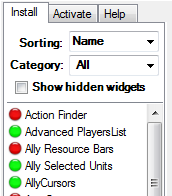
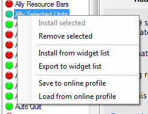
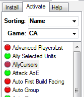
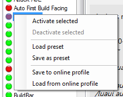

The Widget Downloader enables you to access the Online Widget Database to install and remove widgets from your local spring installation. You can keep your widgets up-to-date by one click or enable AutoUpdate in the settings menu to update all widgets automatically as soon as new versions are available.
Also you can enable and disable widgets for ingame use (like ingame F11-menu).
You can express your opinion about widgets by using the integrated rating and comments system.
To preserve your current widget installation and activation you can store a list of all currently installed widgets to your online profile (or to a file on your harddisk, to share with a friend for example).
To use the ratings and comments system or the online profile you have to enter your lobby account data in the Settings->Advanced Settings of Spring Downloader.
After opening the Widget Downloader Module, you see two tabs: Install and Activate.
NOTE: Both in the Install-Tab and in the Activate-Tab you can select multiple widgets at once by holding the STRG or the SHIFT key.
You see a list of all known widgets currently registered in the Online Widget Database. In front of each widget you see a colored icon which indicates the current installation status of each widget:
|  |
|
Show hidden widgets: Some widgets are hidden by default. This may be because they are buggy, deprecated, or anything else you can think of. However, you can still view them by clicking this checkbox.
Use the provided GUI elements to install, upate and remove widgets to fit your needs. Remember that you have to activate new widgets after installation to actually enable it for ingame usage! You can use the Activate-Tab for it as described in chapter 1.2.
By right-clicking with your mouse into the widget list you will its context-menu:
|  | Install/Export widget list
These two buttons allow you to import/export a list of your currently of installed widgets. This is useful for example to install your set of widgets on a fresh spring install with a formerly backuped list.
Save to/Load from online profile This is similar to the previous function except that it saves to/loads from your online user profile. Also it saves/loads installation AND activation information. Saving a profile overwrites the currently stored online profile. This functions are identical to the ones found in the context-menu of the Activate-Tab. |
This list will show all widgets found in your spring's LuaUI-folder and allows to activate and deactivate them for ingame use (like ingame F11).
|  | Widget names listed in a dark-grey color are widgets only found locally but not known to the database. You still can activate and deactive as you like. Widgets can be activated/deactivated for individual games. So you can enable the widget BuildETA to be active in Balanced Annihilation but no in Complete Annihilation. Use the combobox Game to choose the game you want to activate/deactivate widgets for. |
|  | Load/Save preset By this buttons you can save and load your current activation to configuration to and from a file. Save to/Load from online profile This is similar to the previous function except that it saves to/loads from your online user profile. Also it saves/loads installation AND activation information. Saving a profile overwrites the currently stored online profile. This functions are identical to the ones found in the context-menu of the Install-Tab. |
Problem: I have no widgets in my widget list!
Make sure you gave Spring Downloader enough time after startup (usually 4 minutes) to update itself to the latest version and download or update its DLLs.
If widgets still don't show up for you in the widget lists and you got an error in your Spring Downloader Log History stating "lua51.dll" failed then you probably need to install the Visual Studio 2008 Redistributable Package. Download it from here.
Problem: One of my widgets goes crazy and spring fails to start!
You can go to the Activation-Tab and deactivate the certain widget. It will not be loaded anymore on game start.
If you are a mod maker and you want the widgets included in your mod to be able to be activated and deactivated in the Widget Downloader you can get access too to get full control over your widgets.
Contact me by mail via: vbs at springrts.de